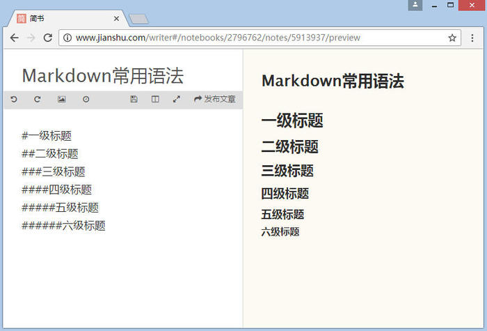
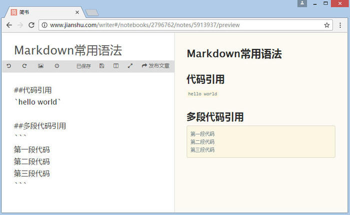
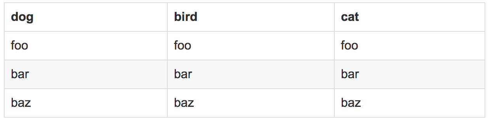

Markdown是一种电子邮件风格的标记语言。其优点有：
- 纯文本，所以兼容性极强，可以用所有文本编辑器打开。
- 让你专注于文字而不是排版。
- 格式转换方便，Markdown 的文本你可以轻松转换为 html、电子书等。
- Markdown 的标记语法有极好的可读性。
标题
1 | # 一级标题 |
注：# 和「一级标题」之间建议保留一个字符的空格，这是最标准的 Markdown 写法。
显示效果：

列表
无序列表
1 | - 文本1 |
显示效果：
- 文本1
- 文本2
- 文本3
有序列表
1 | 1. 文本1 |
显示效果：
- 文本1
- 文本2
- 文本3
注：-、1.和文本之间要保留一个字符的空格。
文字链接
在 Markdown 中，插入链接不需要其他按钮，你只需要使用 [显示文本](链接地址) 这样的语法即可，例如：1
[谷歌](http://www.google.com)
显示效果：
谷歌
插入图片
在 Markdown 中，插入图片不需要其他按钮，你只需要使用  这样的语法即可，例如：1

显示效果：
引用
在我们写作的时候经常需要引用他人的文字，这个时候引用这个格式就很有必要了，在 Markdown 中，你只需要在你希望引用的文字前面加上 > 就好了，例如：1
> 三毛《梦里花落知多少》：即使不成功，也不至于空白。
显示效果：
三毛《梦里花落知多少》：即使不成功，也不至于空白。
粗体和斜体
Markdown 的粗体和斜体也非常简单，用两个**包含一段文本就是粗体的语法，用一个*包含一段文本就是斜体的语法。例如：1
三毛《梦里花落知多少》：即使不*成功*，也不至于**空白**。
显示效果(成功是斜体，空白是粗体):
三毛《梦里花落知多少》：即使不成功，也不至于空白。
代码引用
需要引用代码时，如果引用的语句只有一段，不分行，可以用 ` 将语句包起来。
如果引用的语句为多行，可以将```置于这段代码的首行和末行。
显示效果：

表格
表格效果在博客中是经常出现的。
示例代码：1
2
3
4
5|dog | bird | cat|
|----|------|----|
|foo | foo | foo|
|bar | bar | bar|
|baz | baz | baz|
显示效果

字符转义
有时候我们需要在页面里打印markdown里的功能字符，例如：*, (等。此时，我们使用\来对字符进行转义。
示例代码：1
2
3
4
5
6
7
8输出：
\*
\(
\)
\[
\]
\+
\-
*
(
)
[
]
+
-